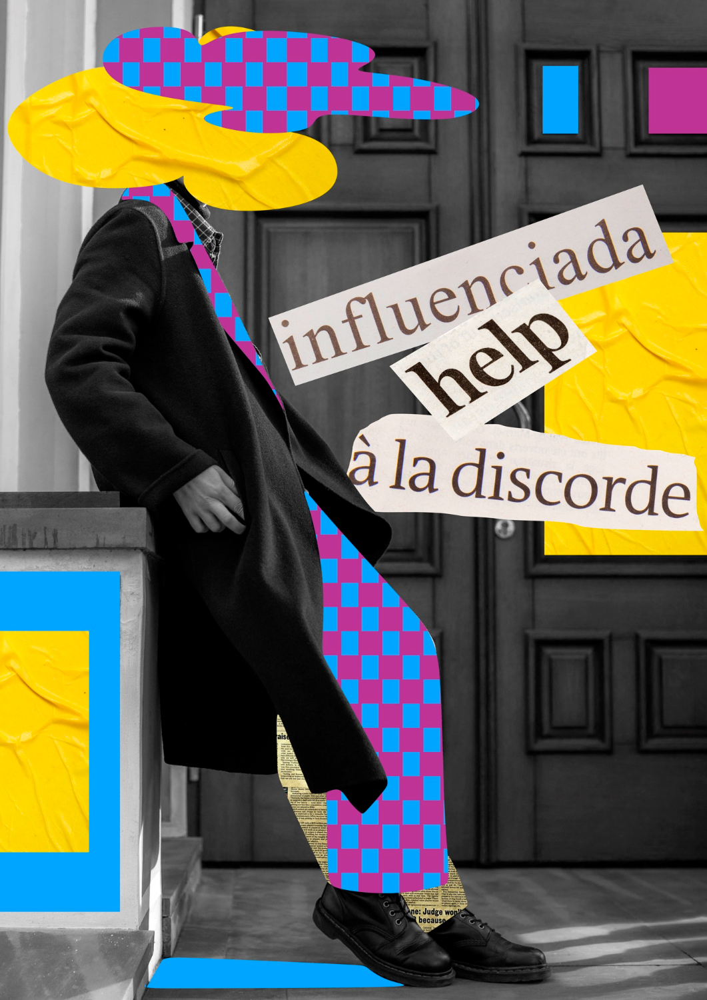

We Care (Redesign)
UI/UX Design
2025
Good design does not start at a screen. It starts with understanding people, the problems they face, and the systems they navigate. Everything here was built from that starting point.
VIEW ALL WORK →
Seven years of end-to-end design across products, systems, and brands. I research before I sketch, define before I design, and question assumptions before I prototype. I stay current with every tool and method available, including AI, but the craft, the judgment, and the decisions are always mine.
Seven years of design, end to end. Research first, systems always, modern tools used with intention. The craft is mine. The judgment is mine.
Download ResumeA way of working built on discipline,
not
templates.
The brief is not the problem. I dig into user behaviour, business goals, and the gaps between them. Research is not overhead here. It is the foundation everything else is built on.
Insights become structure. Problem statements, user journeys, and information architecture that give the design phase something real to work from. This is where ambiguity ends and direction begins.
Wireframes earn their way to high fidelity. Every screen, every state, every interaction is deliberate. Nothing ships that has not been questioned, tested, and refined against what the user actually needs.
Handoff is not the end. I document thoroughly, implement where needed, and stay close post-launch because good design reveals its edge cases in the wild and gets better for it.
Apps built for how people actually behave, not how we imagine they will. Clear navigation, purposeful layouts, and interaction patterns that serve the user's real goal without getting in the way.
Web experiences that earn attention and reward it. Microinteractions that feel considered, motion that guides rather than distracts, and pages built to perform as well as they look.
Systems built to outlast the brief. Reusable components, defined tokens, and documented patterns that let products grow across surfaces without losing coherence or making teams reinvent decisions already made.
Strategy without research is just opinion. I work to understand users deeply before proposing anything, and I keep that understanding at the centre of every design decision throughout the project.
Prototypes that ask the hard questions early. I build to test, not to impress, and I keep refining interaction models until the experience responds exactly the way a user would expect without thinking about it.
Design, for Nadir Shaikh, is the discipline of making complexity feel simple. Not through shortcuts, but through rigorous thinking about what users need, what systems can do, and where those two things meet. Every project is a chance to bring real clarity to a real problem, and that is never not interesting.
With a background spanning visual design, UX strategy, and frontend development, Nadir works across the full width of a product. That breadth is deliberate. Products work best when the person designing them understands how they are built, how they are used, and how they need to scale.
Working as a UI/UX designer and developer at an AI-native product studio. I own the design process end to end, from research and strategy through to frontend implementation. I build systems that scale, collaborate closely with engineering, and bring every available tool to bear to ship work that is thorough, precise, and gets out the door on time.
Partnered with startups and creative teams to build UX strategies and visual identities from the ground up. Delivered wireframes, prototypes, design systems, and production-ready interfaces. Always grounded in the user's perspective and always mindful of what the product actually needs to do.
My primary workspace for everything from early exploration to full system architecture. I design responsive interfaces, build component libraries, and structure handoffs so that what gets to development is exactly what was intended.
Used for interactive prototyping and UX validation. Creating clickable flows that let stakeholders test a journey before any code is written surfaces the right questions early, when changes are still cheap and fast.
I write JS to make design intent real in the browser. Handling interactivity, dynamic states, and the edge cases prototypes cannot fully simulate means I own the gap between design and implementation rather than leaving it to chance.
My whiteboard for discovery. I use FigJam to map user journeys, run workshops, and turn research into flows the whole team can reason from. Alignment here consistently saves weeks further down the process.
I have worked across technology, healthcare, fashion, hospitality, and logistics. The domain changes; the discipline stays the same. Understand the user, define the problem clearly, and keep both at the centre of every design decision.
End-to-end UX/UI design, information architecture, design systems, prototyping, branding, and frontend development. I work best when I can own the full picture from research to delivery, and I bring every available tool and method to that process.
Yes. The work above spans UX strategy, product design, and visual identity — each case study walks through the problem, the process, and the outcome. Scroll up, or head to the full archive.
Brand projects begin with audience: who they are, how they think, and what they expect. From there, I build visual systems — identity, type, colour, and motion — that communicate consistently whether the touchpoint is a screen, a card, or a campaign.
Discover, Define, Design, Deliver. I research the landscape, define the user problem clearly, design across fidelities with iteration built in, and hand off with thorough documentation. Every stage informs the next and no stage gets skipped.
Figma for design and systems. Adobe Creative Suite for brand and illustration. FigJam for discovery and collaboration. HTML, CSS, and JavaScript for frontend implementation. I also work with AI tools across my workflow to research, iterate, and execute with greater depth and speed.
BASED IN MUMBAI. A VISUAL AND EXPERIENCE DESIGNER WHO WORKS THE FULL STACK OF DESIGN, FROM RESEARCH AND STRATEGY TO SYSTEMS AND FRONTEND. OPEN TO FREELANCE AND LONG-TERM COLLABORATION.